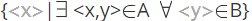
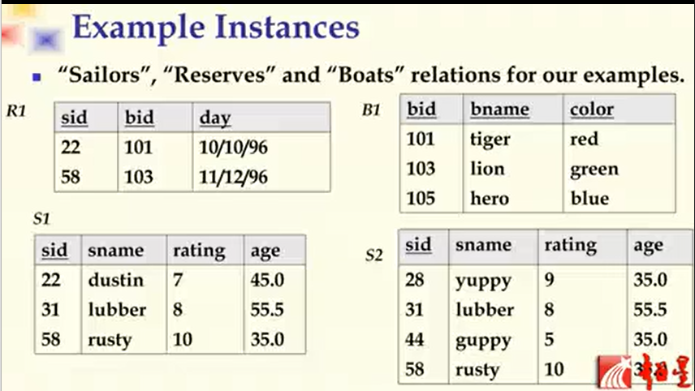

数据库原理之数据模型
数据模型
关系模型
关系：现实中的实体或者实体之间的联系在数据库中用表来表示，而这种表在关系模型里就被称作关系。每个关系就是在属性的值域上面定义的n元联系
例如：R=(A1/D1,A2/D2,A3/D3……An/Dn) or R=(A1,A2,A3……An)，R就被称作关系，A为各种属性，D为属性的值域，A1/D1就代表属性1的值域(也可简化为A1)
r为关系R的一个实例，r={t1,t2,t3……tn}，t为元组
元组t由每个属性在值域上的具体取值构成，t=
t∈D1×D2×D3……Dn，叉乘为笛卡尔乘积，即两个集合两两组合的结果，所以r∈D1×D2×D3……Dn
通俗来说，关系R就是一张表，属性A就是列，元组T就是行
候选键：条件一：在某一关系中的能够唯一决定元组中其他属性的值；条件二：最小的属性集合(他的子集不满足条件一)，满足上述两个条件的属性就是候选键
主键：多个候选键中指定一个为主键，剩下的是候选键
超键：满足候选键的第一个条件，而不满足第二个条件的属性，就是超键
全键：某个关系中用所有属性才能唯一确定元组的集合
外键：在某一关系中能够用来引用其他关系中元组的键，并且在其他关系中为主键，这样的属性就是外键(类似于逻辑指针，不能为空)
实体完整性约束：某一关系中某个属性可以为空，但主键不能为空
缺点：语义比较贫乏
关系代数
基本操作
一元操作
- Selection($\sigma$)：选择操作
- Projection($\pi$)：投影操作，删除不需要的属性，会消除重复元组(在实际数据库系统中，除非用户要求，否则不会消除重复元组)
二元操作
- Cross-product($\times$)：笛卡尔积，将两个关系拼接在一起
- Set-difference(-)：集合差，将属于关系1但不属于关系2的属性去掉
- Union(∪)：并操作，将同时在关系1和关系2中的属性合并
- Renameing operator(ρ)：重命名相同名称的属性
- Joins：连接操作，避免笛卡尔积中无意义的元组。条件连接：按照某一条件将两个关系连接在一起；等值连接：条件连接中只出现表达式相等的判断，即为等值连接；自然连接：在两个关系的所有公共属性上都进行等值连接
- Division(/)：除法操作，A/B=
查询
实例说明
上述理论比较抽象，博主就结合如下图所示的四张表来具体说明上述的各种概念和操作

以R1为例，sid这个属性既可以唯一决定元组，而且是最小属性集合，所以sid就是候选键，同理bid,day也是；对于(sid,bid)，可以唯一的决定元组，但不是最小属性集合，所以是超键
ER模型
基本概念
实体(Entity)：现实生活中可以被区分的对象，由一组属性表示
实体集(Entity Set)：一组相似的实体组成的集合
特点：
- 实体集中所有实体有相同的一组属性
- 每个实体集有一个键和一个值域
- 允许复合类型(表中套表)和多值属性(一个人的多个电话号码)
联系(Relationship)：现实世界中两个及以上实体之间的关系
联系集(Relationship set)：同类联系组成的集合
ER图
矩形表示实体，菱形表示实体之间的联系，椭圆形表示实体或联系的属性
语义约束
基数比约束
实体集中的实体之间的联系
一对一
一对多
多对多
参与度约束
一个实体参与联系的最小次数和最大次数构成的区间
EER模型(扩展ER模型)
弱实体：不能单独存在、需要依赖其他实体存在的实体。例如，职工与家属，家属就是弱实体
普遍化与特殊化
聚集：将两个实体集之间的联系也看成实体集，用这个实体集再与其他实体集产生联系
范畴：表达不同类型的实体组成的实体集合。例如，银行账户包含对公账户和对私账户，这是两种不同类型的实体组成的实体集